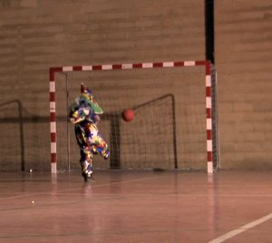

La fiesta de otros
Other People’s Celebrations

Ana Serret ItuarteES 2015 – 73 min – Spanish
Premio Docma Mejor Largometraje
German Premiere
B: Ana Serret Ituarte – DOP: Pau
Amengual, Paco Geraldo
E: Marta Velasco – S: Sergio López Eraña – P: Creaciones Imperfectas
D: Instituto Cervantes (Espacio femenino)
“Verbena” (open
air dance band) is tradition in Spain, a country used to looking
at other people´s celebrations. I was interested in working with
the idea of the end of the party: change, crisis, following the
leftovers produced by disintegration.
Music, summer, work, money, all disappears when winter arrives for
musicians belonging to a time that is slowly fading away. With
that premise as the basis, I play with silence and noise. I create
a sonorous body as resonance of the most private feelings of
characters from a different time.That is why I shut my ears and I
look at the “verbena” and I listen to how the party ends.
saturday 7 oct 7.00 p.m. neues maxim
Ana Serret Ituarte She learned on the job while working in Spain as 2nd assistant director for some years. 6 years in Rome working as editor in a studio. She moved back to Madrid tojoin López-LiFilms, with Extranjeros de sí mismos (Goya-nominated 2000) and Un instante en la vida ajena (Goya 2004 Best Documentary Feature) both by J.L. López-Linares, being the most note working films in which she participated as 2nd unit director and editor. Director of Extras (Goya 2005 Best Documentary Short, Medina del Campo Best Documentary Short, Málaga Film Festival).
Currently she is preparing her second film.